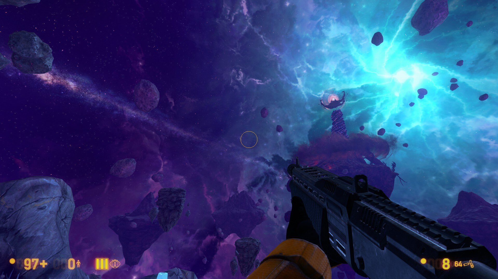
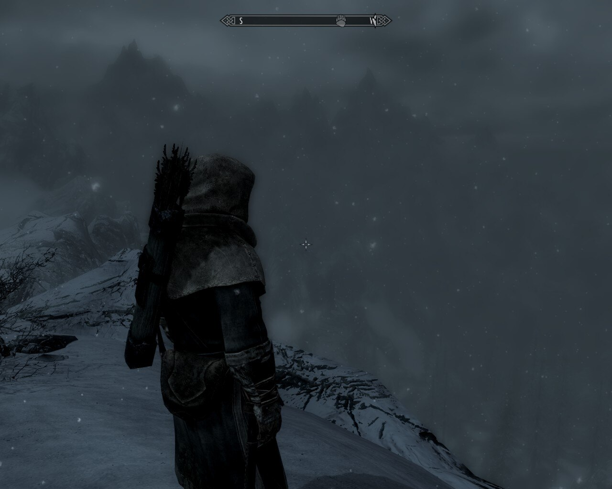

Columbia From Bioshock Infinite
Xen from Black Mesa

Throat of the world from Skyrim

The place almost seems magical and at first it looks like an utopia, but you slowly realize how it all works.
Going to Xen for the first time is a jaw-dropping experience, the details, sound and environment are beautifully crafted.
Arriving at the throat of the world makes the voyage worth it, seeing the whole Skyrim map in all its glory has no price.